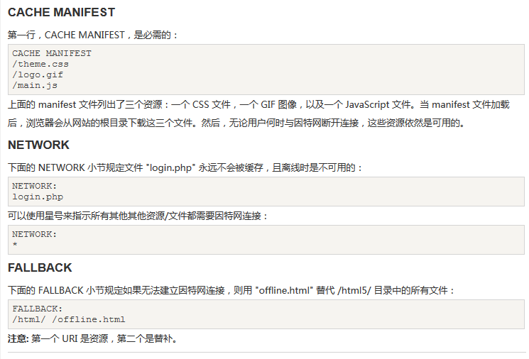
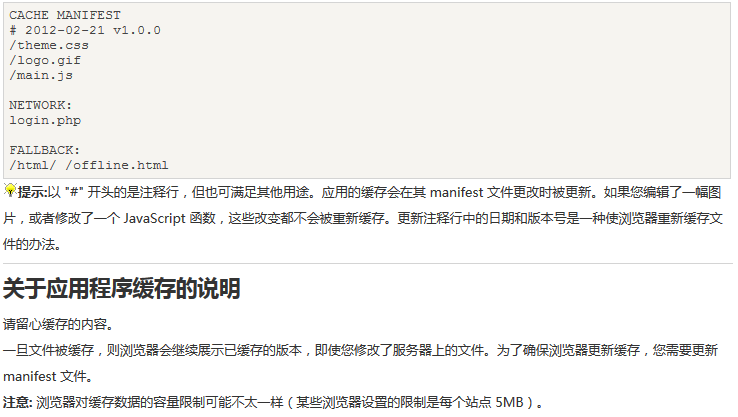

通过创建cache manifest文件，来实现web应用离线(版本)缓存
应用程序缓存带来的三大优势：
1：离线浏览
2：速度（加载更快）
3：减少服务器负载-浏览器只会从服务器下载更新过的或更改过的资源
如需启用缓存，需在html标签中设置 manifest属性
< html manifest="demo.appcache" >
manifest 文件的建议的文件扩展名是：".appcache"。
请注意，manifest 文件需要配置正确的 MIME-type，即 "text/cache-manifest"。必须在 web 服务器上进行配置。
manifest文件：告诉浏览器被缓存和不缓存的内容， 可分成三部分
cache manifest:在此标题下列出的文件将在首次下载后进行缓存
network:在此标题下列出的文件需要与服务器的连接，且不会被缓存
fallback: 在此标题下列出的文件规定当页面无法访问时的回退页面（比如 404 页面）加载失败/错误显示的界面
更新缓存
1：用户清空
2：manifest文件被修改
3：由程序来更新缓存
